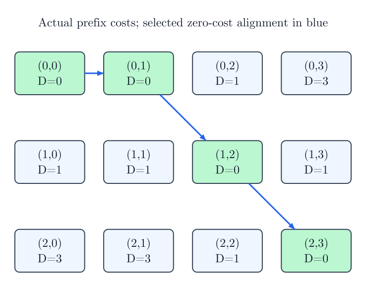
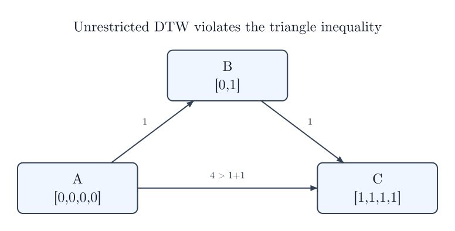
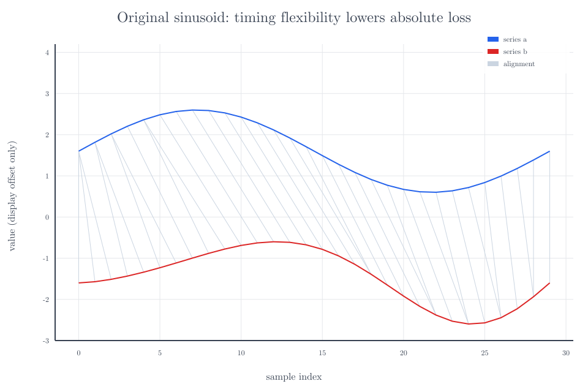
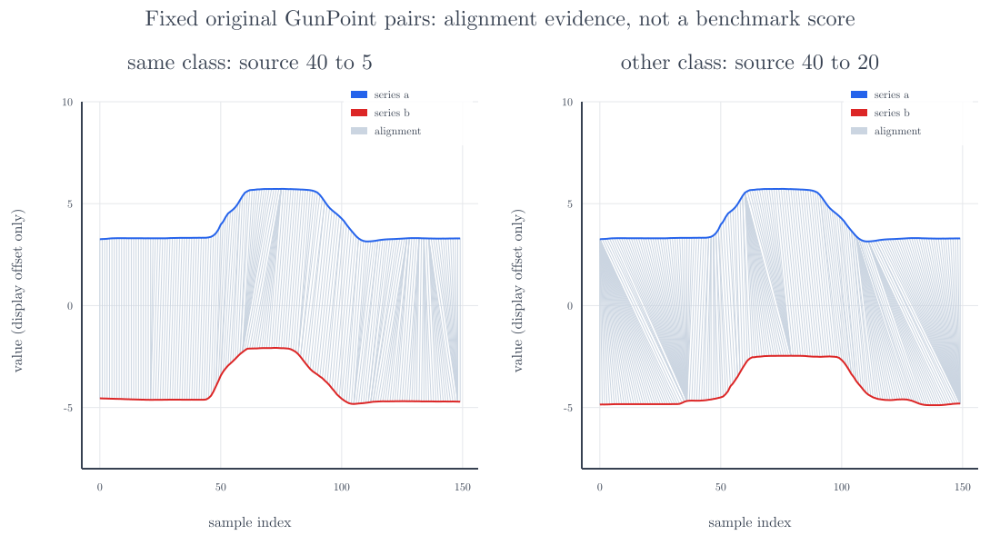
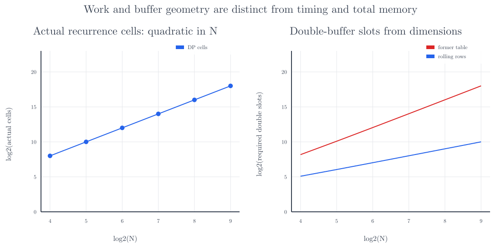
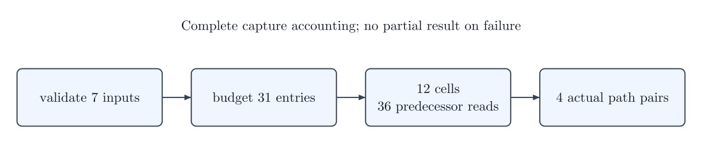

Dynamic Time Warping: Actual Alignments, Costs and the Limits of Elastic Similarity
Abstract
Given two numeric recordings, we want to compare their shapes when similar features occur at different sample indices. A rigid comparison pairs equal positions and can confuse timing differences with amplitude differences. Dynamic time warping chooses a minimum-cost monotone alignment instead. We begin with a tiny repeated-value example, inspect the actual prefix costs and traceback, retain the original time-distorted sinusoid, and align fixed recorded GunPoint motions through the canonical data loader. Exact work counts, nonmetric counterexamples and checked numerical/capture boundaries qualify what the resulting similarity does and does not mean.
Align a repeated value before discussing a large waveform
Let a=[1,2,3] and b=[1,1,2,3]. The path (0,0),(0,1),(1,2),(2,3) pairs the first value of a with both initial ones in b, then matches the twos and threes. Every local absolute difference is zero. The following program prints all twelve actual accumulated costs and draws the selected path through those cells. Cell (i,j) uses zero-based observation indices and displays D(i+1,j+1) in the prefix-length recurrence below. The diagram uses the solver's captured values and returned indices; it does not rerun or reconstruct the search.
#include <dm/dm.hpp>
int main(){
std::filesystem::create_directories("build");
const auto t=dm::geometry::dynamic_time_warping_trace({1,2,3},{1,1,2,3});
std::print("Original tiny distance {}; path pairs {}; cells {}; predecessor reads {}; capture entries {}.\n\n",t.result.distance,t.result.path_a.size(),t.work.cells,t.work.predecessor_reads,t.captured_entries);
std::print("| a index | b index | local absolute cost | accumulated cost |\n| ---: | ---: | ---: | ---: |\n");
dm::graphics::Diagram d(64,1100);dm::graphics::DiagramNodeStyle box;box.width=2.2;box.height=1.2;box.font_size=24;
for(std::size_t i=0;i<t.a.size();++i)for(std::size_t j=0;j<t.b.size();++j){
std::print("| {} | {} | {:.0f} | {:.0f} |\n",i,j,std::abs(t.a[i]-t.b[j]),t.cumulative[i*t.b.size()+j]);
bool selected=false;for(std::size_t k=0;k<t.result.path_a.size();++k)selected|=t.result.path_a[k]==int(i)&&t.result.path_b[k]==int(j);
box.fill=selected?dm::graphics::RGB{187,247,208}:dm::graphics::RGB{239,246,255};
d.node(std::format("{},{}",i,j),{2.8*j,-2.8*double(i)},std::format("({},{})\nD={:.0f}",i,j,t.cumulative[i*t.b.size()+j]),box);
}
dm::graphics::DiagramStroke route;route.color={37,99,235};route.width=3;
for(std::size_t k=1;k<t.result.path_a.size();++k)d.edge(std::format("{},{}",t.result.path_a[k-1],t.result.path_b[k-1]),std::format("{},{}",t.result.path_a[k],t.result.path_b[k]),"",route);
std::print("\nChosen path:");for(std::size_t k=0;k<t.result.path_a.size();++k)std::print(" ({},{})",t.result.path_a[k],t.result.path_b[k]);std::print(".\n");
d.text({4.2,1.6},"Actual prefix costs; selected zero-cost alignment in blue",24).save_svg("build/dtw_tiny.svg");
}Original tiny distance 0; path pairs 4; cells 12; predecessor reads 36; capture entries 31.
| a index | b index | local absolute cost | accumulated cost |
|---|---|---|---|
| 0 | 0 | 0 | 0 |
| 0 | 1 | 0 | 0 |
| 0 | 2 | 1 | 1 |
| 0 | 3 | 2 | 3 |
| 1 | 0 | 1 | 1 |
| 1 | 1 | 1 | 1 |
| 1 | 2 | 0 | 0 |
| 1 | 3 | 1 | 1 |
| 2 | 0 | 2 | 3 |
| 2 | 1 | 2 | 3 |
| 2 | 2 | 1 | 1 |
| 2 | 3 | 0 | 0 |
Chosen path: (0,0) (0,1) (1,2) (2,3).

Derive the recurrence and its witness
A legal path starts at (0,0), ends at (n−1,m−1), and advances by (1,0), (0,1) or (1,1). The first coordinate indexes a and the second indexes b. Both endpoints are mandatory. Its unnormalized loss is the sum of a_i−b_j over all visited pairs. Thus lengths may differ, and one observation may be paired with several observations of the other input.
Let D(i,j) denote the minimum cost for prefixes of lengths i and j. Set D(0,0)=0 and the other empty-prefix boundaries to infinity. Then
Every legal final step has one of those predecessors. Removing it leaves a legal prefix path; appending it to a minimizing prefix path attains the recurrence. Induction in increasing i+j therefore proves optimality. Traceback follows a minimizing predecessor until the origin. Stored ties prefer diagonal, then advancing a, then advancing b, preserving the original API's deterministic witness. Each step advances at least one axis, so max(n,m)<=L<=n+m−1 for L returned pairs.
This implementation uses scalar absolute loss, with no window, slope constraint, step weighting, square root or length normalization. It is an unrestricted variant of the time-alignment framework. The cited Sakoe–Chiba paper also studies weighting, normalization and constraints; those additional rules are not silently included here.
A useful similarity is not necessarily a metric
Unequal sequences [0] and [0,0] have zero DTW cost. The triangle inequality can fail too: take A=[0,0,0,0], B=[0,1] and C=[1,1,1,1]. A can repeat its zeros against B's first zero and pay only once for B's one. B can similarly pay only once for its zero against C. Their two costs are one each, while every pair between A and C costs one and any legal path has at least four pairs. Hence d(A,C)=4>1+1.
#include <dm/dm.hpp>
int main(){
std::filesystem::create_directories("build");
const std::vector<double>a{0,0,0,0},b{0,1},c{1,1,1,1};
const auto ab=dm::geometry::dynamic_time_warping(a,b),bc=dm::geometry::dynamic_time_warping(b,c),ac=dm::geometry::dynamic_time_warping(a,c);
const auto repeated=dm::geometry::dynamic_time_warping({0},{0,0});
std::print("Unequal stretched zeros: distance {}. Triangle: d(A,C)={} > d(A,B)+d(B,C)={}+{}={}.\n",repeated.distance,ac.distance,ab.distance,bc.distance,ab.distance+bc.distance);
if(!(ac.distance>ab.distance+bc.distance))throw std::runtime_error("triangle control failed");
dm::graphics::Diagram d(64,1100);dm::graphics::DiagramNodeStyle box;box.width=3.2;box.height=1.3;box.font_size=24;
d.node("a",{0,0},"A\n[0,0,0,0]",box).node("b",{4,3},"B\n[0,1]",box).node("c",{8,0},"C\n[1,1,1,1]",box)
.edge("a","b",std::format("{:.0f}",ab.distance)).edge("b","c",std::format("{:.0f}",bc.distance))
.edge("a","c",std::format("{:.0f} > {:.0f}+{:.0f}",ac.distance,ab.distance,bc.distance))
.text({4,4.3},"Unrestricted DTW violates the triangle inequality",24).save_svg("build/dtw_nonmetric.svg");
}Unequal stretched zeros: distance 0. Triangle: d(A,C)=4 > d(A,B)+d(B,C)=1+1=2.

For equal lengths the diagonal path is always feasible, so DTW is at most the rigid L1 sum over matching sample indices. The earlier report called its comparator Euclidean even though it summed absolute errors. We use the precise name rigid L1 throughout; a squared-loss or Euclidean DTW variant would define a different objective.
Retain the original thirty-sample sinusoid
Sample a(u)=sin(2πu) and b(u)=sin(2πu^1.6) at u=i/29. The same waveform has a nonlinear timing distortion. The rigid L1 comparator uses the diagonal witness; the optimal path can repeat indices to align crests and troughs. Vertical offsets in the figure only separate the displayed curves and do not enter either cost.
#include <dm/dm.hpp>
int main(){
std::filesystem::create_directories("build");
const auto u=dm::seql(0,29,30)/29;
const std::vector<double>a=dm::sin(2*std::numbers::pi*u),b=dm::sin(2*std::numbers::pi*dm::pow(u,1.6));
const auto t=dm::geometry::dynamic_time_warping_trace(a,b);
std::vector<int> diagonal(a.size());std::iota(diagonal.begin(),diagonal.end(),0);
const auto rigid=dm::geometry::dtw_path_cost(a,b,diagonal,diagonal);
std::print("Original sinusoid: DTW {:.5f}; rigid L1 {:.4f}; path pairs {}; cells {}; capture entries {}.\n",t.result.distance,rigid,t.result.path_a.size(),t.work.cells,t.captured_entries);
std::print("Path witness recomputed cost {:.17g}.\n",dm::geometry::dtw_path_cost(a,b,t.result.path_a,t.result.path_b));
dm::geometry::plot_dtw_alignment(a,b,t.result).title("Original sinusoid: timing flexibility lowers absolute loss")
.y_limits(-3,4.2).save_svg("build/dtw_sine.svg");
}Original sinusoid: DTW 1.41447; rigid L1 12.2668; path pairs 35; cells 900; capture entries 1860. Path witness recomputed cost 1.4144703472582707.

Align recorded motions through the canonical data API
GunPoint contains two actors performing gun-draw and pointing actions. The released univariate signals track the right hand's x-coordinate. The official archive has 50 training and 150 test records, each with 150 samples. The existing canonical preparation holds ten original training records out for validation, leaving 40 fitting records; the 150 official test records remain separate.
We use fixed fitting records: the first stored record, the first later record with the same label, and the first with the other label. Selection uses metadata and storage order, not the distances we are about to show. The canonical loader retains original source ids and raw Float32 ingress values, widened here for scalar DTW. No additional normalization or synthetic signal is introduced. These two illustrative alignments do not estimate classification accuracy or establish actor independence.
#include <dm/dm.hpp>
int main(){
std::filesystem::create_directories("build");
const auto base=dm::datasets::prepare_example_data("signals",dm::datasets::data_home());
const auto split=dm::nn::models::LoadSeries(std::filesystem::path(base)/"time_series");
const auto& fit=split.pools[0];const auto labels=fit.labels.to_vector<int>(),ids=fit.source_ids.to_vector<int>();
const auto a=dm::nn::select(fit.signals,0,0).reshape({150}).to_vector<double>();
std::size_t same=labels.size(),different=labels.size();
for(std::size_t i=1;i<labels.size();++i){if(labels[i]==labels[0]&&same==labels.size())same=i;if(labels[i]!=labels[0]&&different==labels.size())different=i;}
if(same==labels.size()||different==labels.size())throw std::runtime_error("missing source classes");
std::print("Canonical pools: {} fitting, {} validation, {} official test records. Reference source id {}, class {} (0=gun, 1=point).\n\n",fit.size(),split.pools[1].size(),split.pools[2].size(),ids[0],labels[0]);
std::print("| pair | other source id | other class | DTW | rigid L1 | path pairs | DP cells |\n| :--- | ---: | ---: | ---: | ---: | ---: | ---: |\n");
auto layout=dm::graphics::RLayout::create(1,2);std::vector<int> diagonal(150);std::iota(diagonal.begin(),diagonal.end(),0);
for(auto row:{same,different}){
const auto b=dm::nn::select(fit.signals,0,row).reshape({150}).to_vector<double>();
const auto t=dm::geometry::dynamic_time_warping_trace(a,b);const auto name=row==same?"same class":"other class";
std::print("| {} | {} | {} | {:.6f} | {:.6f} | {} | {} |\n",name,ids[row],labels[row],t.result.distance,dm::geometry::dtw_path_cost(a,b,diagonal,diagonal),t.result.path_a.size(),t.work.cells);
auto plot=dm::geometry::plot_dtw_alignment(a,b,t.result,4);
plot.title(std::format("{}: source {} to {}",name,ids[0],ids[row])).y_limits(-8,10);layout.add(plot);
}
layout.size(1100,600).title("Fixed original GunPoint pairs: alignment evidence, not a benchmark score")
.fit_panels().save_svg("build/dtw_gunpoint.svg");
}Canonical pools: 40 fitting, 10 validation, 150 official test records. Reference source id 40, class 1 (0=gun, 1=point).
| pair | other source id | other class | DTW | rigid L1 | path pairs | DP cells |
|---|---|---|---|---|---|---|
| same class | 5 | 1 | 10.078257 | 33.150379 | 183 | 22500 |
| other class | 20 | 0 | 14.425611 | 38.275361 | 233 | 22500 |

Measure the recurrence and account for storage
Every one of the n*m positive cells is evaluated, reading three predecessor slots including infinite border slots. Traceback visits L output pairs. The implementation uses two double cost rows and one predecessor byte per positive cell. Ordinary calls retain no input or cost-table history, but predecessor storage still makes total scratch space O(n*m); this is not a linear-space traceback algorithm.
The next square-size sweep checks actual cell/read counts. It also compares required double-buffer slots: the former full-table design used (N+1)², while rolling rows use 2(N+1). Those slot counts follow from buffer dimensions; they are not measured process memory. Capturing a trace additionally retains N² accumulated doubles, N² directions and the inputs. No panel measures execution time.
#include <dm/dm.hpp>
int main(){
std::filesystem::create_directories("build");
std::vector<double>x,cells,old_slots,new_slots;
std::print("| N | actual cells | predecessor reads | path pairs | captured entries | old full-table double slots | rolling double slots |\n| ---: | ---: | ---: | ---: | ---: | ---: | ---: |\n");
for(std::size_t n:{16,32,64,128,256,512}){
const auto u=dm::seql(0,double(n-1),n)/double(n-1);
const std::vector<double>a=dm::sin(2*std::numbers::pi*u),b=dm::sin(2*std::numbers::pi*dm::pow(u,1.6));
const auto t=dm::geometry::dynamic_time_warping_trace(a,b);
if(t.work.cells!=n*n||t.work.predecessor_reads!=3*n*n||t.captured_entries!=2*n*n+2*n)throw std::runtime_error("work identity failed");
std::print("| {} | {} | {} | {} | {} | {} | {} |\n",n,t.work.cells,t.work.predecessor_reads,t.result.path_a.size(),t.captured_entries,(n+1)*(n+1),2*(n+1));
x.push_back(std::log2(n));cells.push_back(std::log2(t.work.cells));old_slots.push_back(std::log2((n+1)*(n+1)));new_slots.push_back(std::log2(2*(n+1)));
}
auto a=dm::graphics::RPlot::create();a.line(x,cells,"DP cells",{37,99,235}).points(x,cells,"",{37,99,235},5)
.title("Actual recurrence cells: quadratic in N").x_label("log2(N)").y_label("log2(actual cells)").y_limits(0,23);
auto b=dm::graphics::RPlot::create();b.line(x,old_slots,"former table",{220,38,38}).line(x,new_slots,"rolling rows",{37,99,235})
.title("Double-buffer slots from dimensions").x_label("log2(N)").y_label("log2(required double slots)").y_limits(0,23);
dm::graphics::RLayout::create(1,2).add(a).add(b).size(1100,550).title("Work and buffer geometry are distinct from timing and total memory")
.fit_panels().save_svg("build/dtw_work.svg");
}| N | actual cells | predecessor reads | path pairs | captured entries | old full-table double slots | rolling double slots |
|---|---|---|---|---|---|---|
| 16 | 256 | 768 | 18 | 544 | 289 | 34 |
| 32 | 1024 | 3072 | 37 | 2112 | 1089 | 66 |
| 64 | 4096 | 12288 | 75 | 8320 | 4225 | 130 |
| 128 | 16384 | 49152 | 150 | 33024 | 16641 | 258 |
| 256 | 65536 | 196608 | 300 | 131584 | 66049 | 514 |
| 512 | 262144 | 786432 | 600 | 525312 | 263169 | 1026 |

Checked inputs, overflow and complete trace budgets
All inputs must be nonempty and finite. Dimensions must fit the returned signed int indices, and matrix/capture arithmetic is checked before allocation. Finite off-path arithmetic can exceed double range; those prefix cells remain infinity. A finite optimal witness may avoid them. Only a nonfinite final optimum is rejected as cost overflow.
A trace budget counts n+m+2*n*m logical entries: input scalars, positive-cell costs and predecessor codes. Result paths, rolling scratch, scalars and allocator overhead are excluded. The default cap is one million and zero disables only that optional cap. Complete input validation precedes the cap check; no partial trace escapes on failure.
The supplied-path checker validates endpoints, indices and every legal advance before summation. The plotting helper also requires its distance to equal that forward sum exactly and checks shifted display coordinates. These are feasibility and cost checks, not an independent optimality proof. Native tests supply a separate exhaustive path-enumeration oracle.
#include <dm/dm.hpp>
int main(){
std::filesystem::create_directories("build");
const auto t=dm::geometry::dynamic_time_warping_trace({1,2,3},{1,1,2,3},31);
int caps=0,invalid=0,overflow=0,witness=0;
try{(void)dm::geometry::dynamic_time_warping_trace({1,2,3},{1,1,2,3},30);}catch(const std::length_error&){++caps;}
for(double bad:{std::numeric_limits<double>::quiet_NaN(),std::numeric_limits<double>::infinity()})try{(void)dm::geometry::dynamic_time_warping_trace({1},{bad},1);}catch(const std::invalid_argument&){++invalid;}
try{(void)dm::geometry::dynamic_time_warping({}, {1});}catch(const std::invalid_argument&){++invalid;}
try{(void)dm::geometry::dtw_trace_entries(static_cast<std::size_t>(std::numeric_limits<int>::max())+1,1);}catch(const std::length_error&){++caps;}
const auto big=std::numeric_limits<double>::max();
try{(void)dm::geometry::dynamic_time_warping({big},{-big});}catch(const std::overflow_error&){++overflow;}
try{(void)dm::geometry::dtw_path_cost({0,1},{0,1},{0,0,1},{0,0,1});}catch(const std::invalid_argument&){++witness;}
const auto safe=dm::geometry::dynamic_time_warping_trace({big,-big},{big,-big});
const auto disabled=dm::geometry::dynamic_time_warping_trace({1},{1},0);
std::print("Cap/index rejections {}/2; nonfinite/empty rejections {}/3; final-cost overflow {}/1; repeated witness rejection {}/1.\n",caps,invalid,overflow,witness);
std::print("Exact tiny capture {}; disabled-cap singleton entries {}; benign off-path infinity {}; finite optimal distance {}.\n",t.captured_entries,disabled.captured_entries,std::isinf(safe.cumulative[1]),safe.result.distance);
dm::graphics::Diagram d(64,1100);dm::graphics::DiagramNodeStyle box;box.width=4;box.height=1.6;box.font_size=24;
const std::vector<std::string> labels{std::format("validate {} inputs",t.a.size()+t.b.size()),std::format("budget {} entries",t.captured_entries),std::format("{} cells\n{} predecessor reads",t.work.cells,t.work.predecessor_reads),std::format("{} actual path pairs",t.work.traceback_steps)};
for(std::size_t i=0;i<labels.size();++i){d.node(std::to_string(i),{4.8*i,0},labels[i],box);if(i)d.edge(std::to_string(i-1),std::to_string(i));}
d.text({7.2,2},"Complete capture accounting; no partial result on failure",24).save_svg("build/dtw_boundaries.svg");
}Cap/index rejections 2/2; nonfinite/empty rejections 3/3; final-cost overflow 1/1; repeated witness rejection 1/1. Exact tiny capture 31; disabled-cap singleton entries 4; benign off-path infinity true; finite optimal distance 0.

Verification and interpretation
The original function and result field layout are retained. Separate old/current binaries match 14,402 original distances and exact paths, including both original examples and every pair of length-one-through- four sequences over {-1,0,1}. Independent tests enumerate every legal path on those small inputs and check the actual prefix table, chosen directions, final witness, capture size and work counts. Seeded controls check symmetry, positive scaling and the rigid L1 bound; other cases exercise ownership, finite/overflow limits, plotting validation and a 50,001-pair one-dimensional traceback without recursive library calls.
DTW can remove timing mismatch, but unrestricted repetition may align unrelated recordings surprisingly cheaply. Zero cost is not identity, triangle reasoning is unsafe, and raw summed costs depend on amplitude, length and the allowed step rules. The GunPoint illustrations therefore show alignments of stated original records, not recognition performance.
References
H. Sakoe and S. Chiba (1978), [Dynamic Programming Algorithm Optimization for Spoken Word Recognition](https://jeffe.cs.illinois.edu/teaching/compgeom/refs/Sakoe-Chiba-DTW.pdf), IEEE Transactions on Acoustics, Speech, and Signal Processing 26(1), 43–49, doi:10.1109/TASSP.1978.1163055. The present API uses the unrestricted, unweighted scalar absolute-loss variant specified above.
The [official GunPoint description](https://www.timeseriesclassification.com/description.php?Dataset=GunPoint) identifies the two actions, actors, tracked coordinate and original 50/150 split. Canonical preparation provenance and source ids identify the raw records used here; a source-record split does not imply new actors.